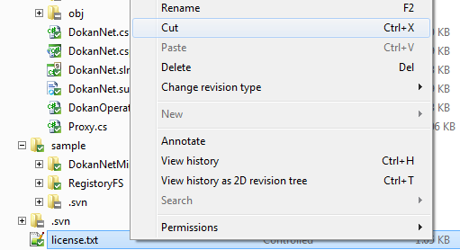
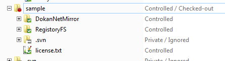
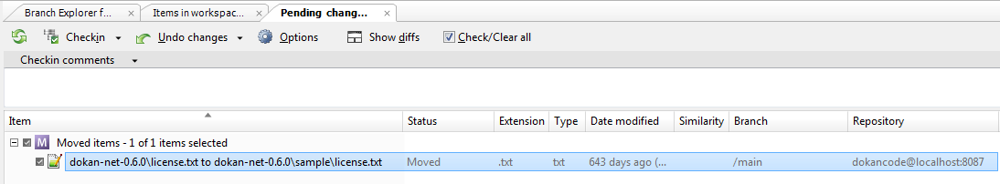

Let’s now make simple operations on a file.
We’re going to move license.txt. Let’s first run a cut to move the file:

Figure 1: Moving a file
We’re going to move ‘license.txt’ to the ‘dokan-net-0.6.0\sample’ directory. In order to do that we just paste ‘license.txt’ in there using the context menu or Ctrl +V. And here his how your Items View will look like:

Figure 2: Items View
The Pending Changes view shows what we’ve modified so far:

Figure 3: Pending Changes View
It explains the move you just performed (source and destination of the move plus the status set s ‘moved’)
You can now checkin the move. Don’t forget to write a comment like: “license.txt moved to ‘sample’ directory”.